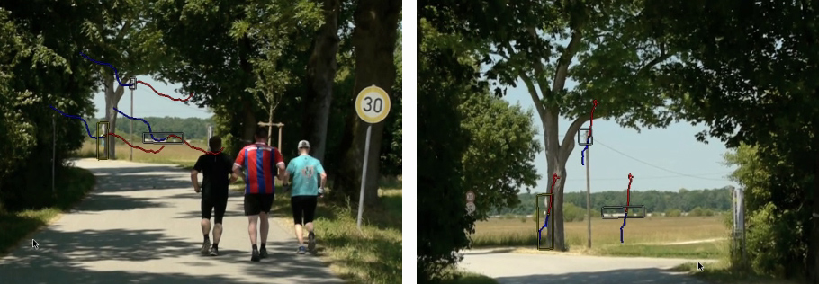
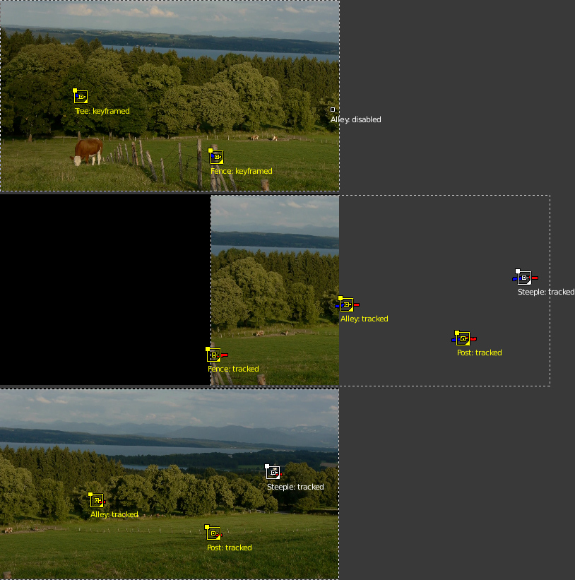
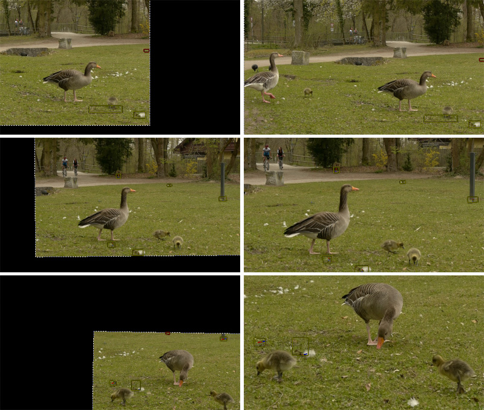

Giới thiệu¶
Ổn định video 2D là một tính năng được xây dựng dựa trên khả năng tracking đặc điểm hình ảnh của Blender: bạn có thể sử dụng một số điểm track để loại bỏ độ rung, chớp và giật khỏi footage video. Thông thường, ổn định hình ảnh là một phần của quy trình 2D nhằm chuẩn bị và cải thiện footage trước các bước xử lý hoặc mô hình hóa tiếp theo. Trang này giúp bạn hiểu cách tính năng hoạt động, giới thiệu các thuật ngữ và khái niệm liên quan, mô tả chi tiết các điều khiển giao diện có sẵn và cuối cùng đưa ra một số gợi ý về cách sử dụng trong thực tế.
Các tình huống sử dụng điển hình của bộ ổn định:
Khắc phục các khuyết điểm nhỏ (tripod rung, giật trong chuyển động camera).
"Steadicam phiên bản tiết kiệm" (khi không có, không đủ khả năng chi trả hoặc không thể sử dụng Steadicam thật).
Là bước chuẩn bị cho masking, matching và rotoscoping.
Không phải hiếm khi việc ổn định 2D phải xử lý những footage chưa hoàn hảo và có khuyết điểm ở mức độ nào đó.
Nguyên lý hoạt động¶
Để phát hiện chuyển động giả trong một shot nhất định, chúng ta sẽ giả định một mô hình đơn giản hóa về chuyển động này. Sau đó, chúng ta cố gắng khớp chuyển động của các đặc điểm đã track với mô hình đơn giản hóa đó để suy ra một phép bù. Dĩ nhiên, cách này chỉ hiệu quả ở mức độ mô hình của chúng ta là phù hợp — nhưng trên thực tế, cách tiếp cận đơn giản hóa này hoạt động đáng ngạc nhiên tốt ngay cả với những shot khá phức tạp, nơi giả định cơ bản của chúng ta chỉ là xấp xỉ của những chuyển động tinh vi hơn nhiều.
Mô hình đơn giản hóa làm nền tảng cho chức năng ổn định 2D như được triển khai ở đây giả định chuyển động thông qua một phép biến đổi tuyến tính affine:
Camera bị đẩy lên/xuống/sang bên bởi một thành phần tịnh tiến.
Sau đó hình ảnh bị nghiêng và thu phóng quanh một điểm pivot (tâm quay).
Để bù chuyển động theo mô hình đơn giản hóa này, bộ ổn định 2D tiến hành theo hai bước. Đầu tiên, chúng ta cố gắng phát hiện độ lệch tịnh tiến từ trung bình có trọng số của tất cả các điểm track translation. Sau khi bù xong thành phần tịnh tiến này, chúng ta sử dụng thêm các điểm track rotation/scale để phát hiện độ quay quanh một điểm pivot cho trước. Một lần nữa, chúng ta phát hiện các thay đổi về độ quay và tỷ lệ thông qua trung bình có trọng số của tất cả các điểm track rotation/scale được cung cấp.
Trong phiên bản hiện tại, điểm pivot được neo vào trọng tâm của các điểm track translation. Vì vậy trên thực tế, độ tịnh tiến đã phát hiện vốn đã được loại trừ sẵn. Trong một số trường hợp cách này chưa tối ưu, đặc biệt khi các track bị đứt đoạn hoặc không bao phủ toàn bộ thời lượng của footage — chúng tôi dự kiến bổ sung thêm các tùy chọn để kiểm soát điểm pivot tốt hơn trong các bản phát hành sau.
Các track ổn định¶
Như vậy, để làm nền tảng cho bất kỳ hoạt động ổn định hình ảnh nào, chúng ta cần các đặc điểm hình ảnh đã được track để suy ra chuyển động. Các điểm tracking hay "track" này có thể được thiết lập bằng thành phần tracking đặc điểm hình ảnh của Blender. Việc lựa chọn đúng các điểm để track khá cần khéo, nhưng lại là yếu tố then chốt để ổn định hình ảnh thành công. Thường thì chúng ta đến đây vì phải xử lý footage không hoàn hảo. Trong những trường hợp như vậy, việc lấy trung bình của nhiều track giúp khắc phục phần nào các lỗi hình ảnh hoặc lỗi tracking. Hơn nữa, khi footage chứa các chuyển động do phối cảnh gây ra, các điểm tracking đặt đối xứng phía trên và phía dưới đường chân trời có thể được dùng để triệt tiêu chuyển động giả và đưa việc ổn định vào vùng tiêu điểm ở giữa.


Các chuyển động phân kỳ do phối cảnh gây ra.¶
Các track có thể được thêm theo hai nhóm:
Trước tiên là danh sách các track được dùng để bù cho các cú nhảy trong vị trí camera. Từ tất cả các điểm tracking được thêm vào nhóm này, chúng ta tính trung bình có trọng số. Sau đó, chúng ta cố gắng giữ vị trí trung bình này không đổi trong suốt shot. Vì vậy, đây là ý tưởng tốt khi dùng các marker tracking ở gần và tập trung quanh chủ thể quan trọng nhất.
Nhóm lựa chọn track thứ hai được dùng để giữ cho độ quay và tỷ lệ của hình ảnh không đổi. Bạn có thể dùng chung các track cho cả hai nhóm. Nhưng thường thì tốt nhất là dùng các điểm tracking cách xa tâm hình ảnh, và đặt đối xứng ở cả hai bên, để nắm bắt các chuyển động góc chính xác hơn. Tương tự như trường hợp "location", chúng ta tính mức đóng góp góc trung bình và sau đó cố gắng giữ giá trị này không đổi trong suốt shot.
Footage, Hình ảnh & Canvas¶
Khi nói về việc ổn định chuyển động của video, chúng ta phải phân biệt một vài hệ quy chiếu. Các thành phần hình ảnh mà footage chứa đựng di chuyển thất thường trong ranh giới hình ảnh gốc của footage — đây chính là lý do chúng ta sử dụng bộ ổn định. Khi việc ổn định đã thành công, các thành phần hình ảnh lúc này có thể được coi là đứng yên, còn đổi lại, ranh giới hình ảnh của footage lại mang chuyển động thất thường và nhảy ngược lại theo chiều đối diện. Đây là hệ quả trực tiếp của hoạt động của bộ ổn định.
Vì các thành phần hình ảnh thực tế, tức chủ thể của footage, giờ đây có thể được coi là đứng yên, chúng ta có thể dùng chúng làm hệ quy chiếu mới: chúng ta coi chúng như được gắn vào một phông nền cố định, mà ta gọi là canvas. Việc đưa vào khái niệm "canvas" này giúp xử lý các chuyển động có chủ ý của camera. Và hơn thế nữa, nó còn mang lại một lợi ích bổ sung: pixel của footage video rất thường không vuông. Vì vậy, chúng ta phải kéo giãn và mở rộng những pixel đó trước khi có thể thực hiện bất kỳ việc ổn định độ quay nào có ý nghĩa. Như vậy, theo định nghĩa, canvas trở thành chuẩn tham chiếu cho việc hiển thị không biến dạng của nội dung hình ảnh.
Nhưng khi camera được di chuyển một cách có chủ ý, chúng ta phải xét thêm một hệ quy chiếu nữa ngoài canvas: đó là khung hình (hay "cadre") của hình ảnh cuối cùng mà chúng ta muốn tạo. Để hiểu sự phân biệt này, hãy xét một shot cầm tay pan sang phải: vì camera của chúng ta đã hướng sang phía bên phải, nội dung hình ảnh thực tế di chuyển về phía bên trái bên trong khung hình gốc. Nhưng hãy giả sử bộ ổn định đã thành công trong việc "cố định" mọi nội dung hình ảnh tương đối với canvas — điều này lại có nghĩa là ranh giới hình ảnh gốc bắt đầu di chuyển thất thường về phía bên phải, và nội dung của hình ảnh sẽ bắt đầu dần dần biến mất phía sau ranh giới trái của hình ảnh gốc. Sau một khoảng pan nhất định, chúng ta sẽ mất toàn bộ nội dung gốc và chỉ còn thấy phông nền hình ảnh màu đen trống rỗng. Giải pháp duy nhất cho vấn đề đó là di chuyển khung hình cuối cùng theo sang phải, nghĩa là đi theo chuyển động pan vốn có chủ ý ngay từ đầu. Dĩ nhiên, lần này chúng ta muốn thực hiện chuyển động pan mới thêm này một cách mượt mà và sạch sẽ.


Ổn định một shot có pan.¶


Khôi phục chuyển động camera như mong đợi.¶
Để cho phép kiểu bù này và để đưa trở lại chuyển động pan có chủ ý, hoặc độ nghiêng và thu phóng của hình ảnh kết quả, bộ ổn định cung cấp một bộ điều khiển riêng: Expected position (vị trí mong đợi), Expected rotation (độ quay mong đợi) và Expected scale (tỷ lệ mong đợi). Các điều khiển này hoạt động giống như các điều khiển của một camera ảo đang quay nội dung mà chúng ta đã cố định lên canvas. Bằng cách tạo animation cho các thông số đó, chúng ta có thể thực hiện mọi loại chuyển động camera có chủ ý một cách mượt mà.
Các viền đen "nhảy múa"¶
Như đã giải thích ở trên, khi chúng ta ổn định thành công nội dung hình ảnh, ranh giới của footage gốc bắt đầu nhảy loạn theo hướng ngược lại với các chuyển động đã được bù. Điều này là không thể tránh khỏi — nhưng lại rất khó chịu, vì do bản chất thất thường của những chuyển động này, những "viền đen nhảy múa" có xu hướng làm phân tán sự chú ý khỏi chủ thể thực tế và tạo ra cảm giác bồn chồn khó chịu. Vì vậy, mục tiêu của chúng ta phải là che những viền nhảy múa đó càng kỹ càng tốt. Một giải pháp đơn giản là thêm một lượng zoom nhỏ. Đôi khi chúng ta cũng cần tạo animation cho tham số vị trí Expected nhằm giữ hình ảnh ở giữa tâm càng tốt — điều này giúp giảm lượng zoom cần thiết để loại bỏ những viền khó chịu đó.
Hàm Autoscale có thể được dùng để tìm lượng zoom tối thiểu vừa đủ để loại bỏ hoàn toàn những viền đen đó. Tuy nhiên, nếu camera bị giật nhiều, hàm autoscale thường zoom vào quá mức, đặc biệt vì phép tính này nhằm tìm một hệ số zoom tĩnh duy nhất cho toàn bộ thời lượng của footage. Khi điều này xảy ra, bạn thường sẽ thu được kết quả tốt hơn tổng thể bằng cách tự tạo animation thủ công cho cả hệ số zoom lẫn vị trí expected.